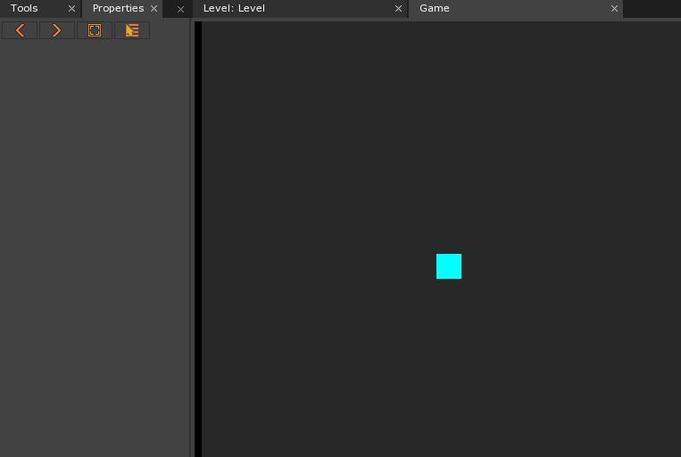
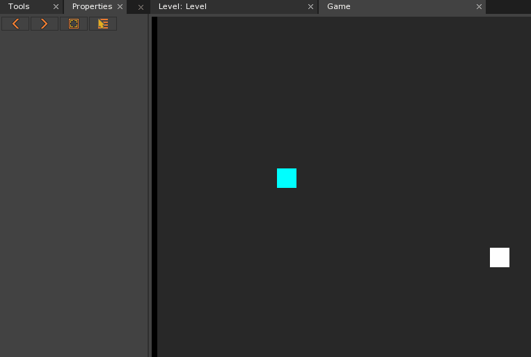
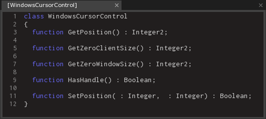
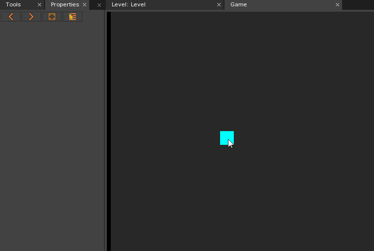

Custom Cursor
Custom Cursors are a great way to add a level of professionalism and polish to any project. A Cursor created specifically for a project can be used for player feedback and fits into the project universe better than the normal Mouse icon in most situations. There are several methods that can be used to add this functionality, all of which come with their own strengths and weaknesses.
Common Uses
- To implement and use a custom menu cursor for a game project
- To implement and use a custom cursor icon that can be used for visual feedback
Using a Custom Cursor
Hiding the Mouse
| Pros: | Cons: |
|---|---|
| Quick to implement | Mouse Icon can leave window bounds |
| Retains all mouse functionality | Will become visible if it does |
The first option involves making the Mouse Cursor invisible while not affecting any of its functionality. This has two easy-to-see benefits: it’s quick to implement and all functionality is retained.
class HiddenMouseExample : ZilchComponent
{
[Dependency]
var Transform : Transform;
function Initialize(init : CogInitializer)
{
// Set the Mouse to invisible
Zero.Mouse.Cursor = Cursor.Invisible;
// Connect to MouseMove Event
Zero.Connect(this.Space, Events.MouseMove, this.OnMouseMove);
}
...
This would be the start of a component attached to the object that will act as the Custom Cursor. After making sure the object has a Transform Component using the Dependency attribute, it then sets the Mouse Cursor to be invisible. The final part of the code-block connects to the MouseMove event, which is fleshed out in the following code-block:
...
function OnMouseMove(event : ViewportMouseEvent)
{
// Get mouse WorldPosition on the Z-Plane at depth 0
var mousePosition = event.ToWorldZPlane(0);
// Set the MouseCursor Objects position to the Mouse position
this.Transform.Translation = mousePosition;
}
}
The OnMouseMove function will fire every time the Mouse is moved, keeping our custom cursor in the same location as the invisible Mouse. It could also connect to other Mouse Events, such as MouseDown or MouseUp, in order to interact with these events visually (e.g., by changing the SpriteSource of the object). All other working functionality can then be given to the Mouse itself, so that it can react with objects that have the Reactive Component attached the them.
A large drawback to using this method is the fact that it allows the Mouse icon to leave the boundaries of the Game window, which will make the Mouse visible and not hide it again even if the Game is brought back into focus. Below is an example of how a Sprite with this script attached would act, as well as what happens when the mouse leaves the boundaries of the window.

It would also be possible to set the Mouse invisible from the MouseMove event, which would stop it from staying visible even if it leaves the window boundaries.
Locking the Mouse
| Pros: | Cons: |
|---|---|
| Mouse stays within widow bounds | Loses most mouse functionality |
| Allows use of multiple Spaces | More complex the hiding the mouse |
A second option, rather than hiding the Mouse, is to lock it to the center of the screen. It helps to solve the issue of the the Mouse staying within the the Game boundaries but also comes with its own set of problems.
class LockedMouseExample : ZilchComponent
{
// An Archetype of the Custom Cursor Object
[Property]
var CursorArchetype : Archetype;
// An Archetype of the Space to be built
[Property]
var CursorSpaceArchetype : Archetype;
// Reference to the CameraViewport of the created Cursor Space
var CurViewport : CameraViewport
{
get { return this.CursorSpace.LevelSettings.CameraViewport; }
}
// An empty Level used to create the Custom Cursor in
[Property]
var CursorLevel : Level;
// Reference to the Custom Cursor Object once it's created
var CursorObj : Cog = null;
// The Space the Custom Cursor will inhabit
var CursorSpace : Space = null;
// Reference to the Translation of the Custom Cursor
var CursorTranslation : Real3
{
get { return this.CursorObj.Transform.Translation; }
}
// Calls a function to give the Cursor Position in Screen Space
var CursorScreenSpacePosition : Real2
{
get { return this.CurViewport.WorldToScreen(this.CursorTranslation); }
}
// Calls a function to give the Cursor Position in the Viewport
var CursorViewportPosition : Real2
{
get { return this.CurViewport.ScreenToViewport(this.CursorScreenSpacePosition); }
}
...
Just from the initial setup it becomes obvious that this method is much more complex than simply making the Mouse invisible and having an Object follow it, but it also offers benefits.
When this is attached to the current levels LevelSettings object, this will create an Object in a new Space that is built on top of the GameSpace, which allows it to function properly in a 3D game. As the getters have defined most of the variables, much of the script is ready to be used.
...
function Initialize(init : CogInitializer)
{
// Traps the Mouse, locking it and making it invisible
Zero.Mouse.Trapped = true;
// Creates a new Space for the Cursor to inhabit
this.CursorSpace =
this.GameSession.CreateNamedSpace("CursorSpace", this.CursorSpaceArchetype);
// Loads the CursorLevel inside the newly made space
this.CursorSpace.LoadLevel(this.CursorLevel);
// Creates the Custom Cursor at (0,0,0) in the new Level
this.CursorObj = this.CursorSpace.CreateAtPosition(this.CursorArchetype, Real3());
// Connects to the MouseMove Event In the Cursor Space, NOT the Game Space
Zero.Connect(this.CursorSpace, Events.MouseMove, this.OnMouseMove);
}
...
The Initialize function creates the required Space, Level and Object for the Custom Cursor. It’s important to make sure that the objects are being made in the CursorSpace, not the main GameSpace.
...
function OnMouseMove(event : ViewportMouseEvent)
{
// Get a new position by adding the distance of the MoveEvent to the Cursors current position
var newPos = this.CursorViewportPosition + event.Movement;
// Create a new position within the Viewport for the Cursor while also Clamping the range
var newCurViewportPos = Math.Clamp(newPos, Real2(), this.CurViewport.ViewportResolution);
// Adjust the Viewport position to the proper Screen position
var newCurScreenPos = this.CurViewport.ViewportToScreen(newCurViewportPos);
// Set the Cursor Objects position to the newly determined position in World Space
this.CursorObj.Transform.Translation =
this.CurViewport.ScreenToWorldZPlane(newCurScreenPos, 0.0);
}
}
Similar to hiding the mouse, the code-block above uses MouseMove Events to control the movement of the Custom Cursor object. This time, however, a few more steps are needed:
- The intended new cursor position is found by adding the current viewport position of the Cursor and the Mouse Movement vector given in the MouseMove Event.
- The new cursor viewport position must be clamped within the boundaries of the viewport.
- The viewport position must be converted to screen position as there is no way to directly convert from viewport space coordinates directly to worldspace.
- The cursor screenspace position must be converted to worldspace so the custom cursor can be moved.
The biggest problem with using this method is the fact that most Mouse functionality is lost, as it becomes locked to the center of the screen. All Cursor functionality will have to be determined using either collision events or Cursor position, which can become taxing on the system as it has to either check the position every frame or resolve various collisions.
Below is an example of this script attached to the LevelSettings object of an empty level, with the blue sprite given as the CursorArchetype and the white sprite following the same script as the hidden cursor example, to show how the mouse is attempting to move from the world origin.

Using a Custom Plugin
| Pros: | Cons: |
|---|---|
| Gives the most control over the mouse | More complex than other solutions |
| Retains all mouse functionality | Requires outside sources |
Warning
A custom plugin will work with any project built using the same Build of the Zero Engine, so long as it has three files:
- The
ZilchPluginSource.datafile associated with the plugin. - The
ZilchPluginSource.data.metafile associated with the same. - The plugin library associated with the both the plugin and the correct Zero Engine build.
To read more about creating and implementing custom plugins, see this page (I need a page).
A third option is to use a custom plugin that allows control over the Windows mouse position, and write a component to clamp the mouse position itself to inside the Camera viewport boundaries. Here’s a link (I need a link) to a plugin with that exact functionality, built with Zero build number 13602, which adds some extra functions.

To use the extra functionality requires a script to access the plugin. Most of the plugin will be working behind the scenes however, with the script only using GetPosition() and SetPosition().
class CustomPluginScriptExample : ZilchComponent
{
// An Archetype of the object to be used as a cursor
[Property]
var CursorArchetype : Archetype;
// An Archetype of the Space to be created for the custom cursor to exist in
[Property]
var CursorSpaceArchetype : Archetype;
// A reference to the CameraViewport of the CursorSpace
var CurSpaceViewport : CameraViewport
{
get { return this.CursorSpace.LevelSettings.CameraViewport; }
}
// The Level to create the custom cursor in
[Property]
var CursorLevel : Level;
// A Boolean used to determine if the mouse is confined to the Camera Margins
// of the Camera in the Cursor Level
[Property]
var IncludeMargins : Boolean = true;
// A reference to the Cursor Object, once created
var CursorObj : Cog = null;
// A Reference to the Cursor Space, once created
var CursorSpace : Space = null;
...
Most of the variables have the same functionality as the variables created when the mouse was being locked to the center. One variable of note is IncludeMargins, which allows the choice between either locking the mouse to the confines of the game window or the camera viewport itself. By setting IncludeMargins to true, the cursor not only stays within the confines of the game when windowed, it will also stay within a smaller camera window inside a project, such as a mini-map for example.
...
function Initialize(init : CogInitializer)
{
// Create the Space for the cursor object
this.CursorSpace =
this.GameSession.CreateNamedSpace("CursorSpace", this.CursorSpaceArchetype);
// Creates the Cursor Level in the Cursor Space
this.CursorSpace.LoadLevel(this.CursorLevel);
// Creates the actual Cursor Object inside the Cursor Space
this.CursorObj = this.CursorSpace.CreateAtPosition(this.CursorArchetype, Real3());
// Connect to LogicUpdate
Zero.Connect(this.CursorSpace, Events.LogicUpdate, this.OnLogicUpdate);
}
...
Again, this is sharing much of the same functionality as when the mouse was locked. The only difference is that it’s connecting to LogicUpdate rather than MouseMove. Since the clamping of the mouse needs to happen repeatedly to make sure that it doesn’t leave the confines of the window, it’s best done within LogicUpdate.
...
function OnLogicUpdate(event : UpdateEvent)
{
// Find the dimensions of the Viewport
var resolution = this.CurSpaceViewport.ViewportResolutionWithMargin;
// Find the Camera margins
var halfMargins = (resolution - this.CurSpaceViewport.ViewportResolution) / 2;
// Find the mouse cursor position, in both Screen Space and Viewport Space
var curScreenPos = WindowsCursorControl.GetPosition();
var cursorViewportPos =
this.CurSpaceViewport.ScreenToViewport(curScreenPos) + this.CurSpaceViewport.ViewportOffset;
// Clamp the mouse
var newCursorViewportPos = Real2();
if (this.IncludeMargins)
{
newCursorViewportPos =
Math.Clamp(cursorViewportPos, halfMargins, resolution - halfMargins);
}
else
{
newCursorViewportPos =
Math.Clamp(cursorViewportPos, Integer2(), resolution);
}
// Recalculate the screen position if Space is not held down
// (used as a method to free the mouse)
if (!Zero.Keyboard.KeyIsDown(Keys.Space))
{
curScreenPos =
(this.CurSpaceViewport.ViewportToScreen(newCursorViewportPos) -
this.CurSpaceViewport.ViewportOffset) as Integer2;
}
// Set Mouse position if in a different location and the CursorControl has the window handle
if (cursorViewportPos != newCursorViewportPos && WindowsCursorControl.HasHandle())
{
WindowsCursorControl.SetPosition(curScreenPos.X, curScreenPos.Y);
}
// Set the Custom Cursor position
this.CursorObj.Transform.Translation =
this.CurSpaceViewport.ScreenToWorldZPlane(curScreenPos, 0.0);
}
}
This will find the dimensions of the viewport, keep the mouse either inside the game window or inside the camera viewport itself, and then set the custom cursor to the same position as the mouse. Since the engine still has full mouse functionality, all that needs to be done is to make mouse icon itself invisible as per our first example. It will still have the issue where if the mouse exits the game screen and comes back it will no longer be invisible; therefore, a check to see if it’s become visible and reset it is recommended.
Below is an example of how this script functions when attached to the LevelSettings object of a level, with the blue sprite given as the CursorArchetype.
